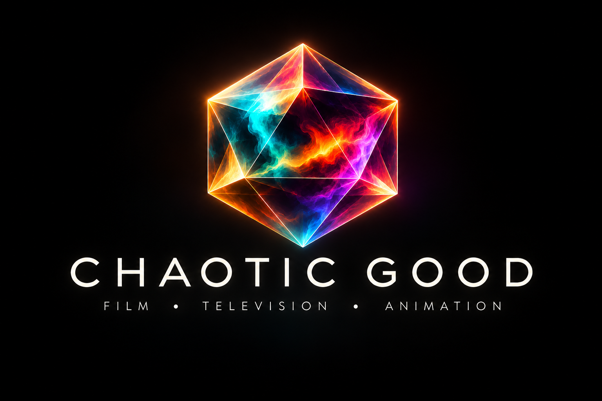

Chaotic Good is a Los Angeles-based production company
creating original films, television, animation, and stories
that don't fit neatly into any one category.
Our work ranges from science-fiction thrillers and adult
comedy to animated films and series for audiences of all ages.
Current productions include The Kronos Conspiracy,
an episodic thriller; an animated series for Amazon Prime Video;
and multiple pilots for a major studio streamer.
Founded by filmmaker and showrunner Tom Danon,
Chaotic Good brings three decades of Hollywood storytelling
experience to an evolving creative landscape.
We embrace new tools and technologies, but the guiding
principle remains simple: Story comes first.